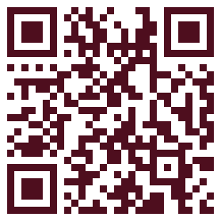
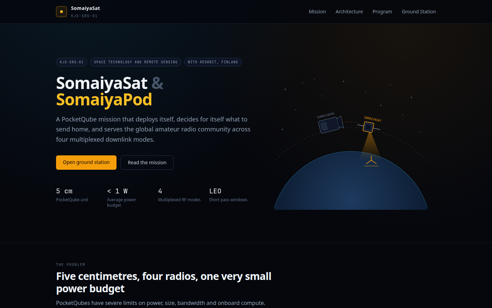
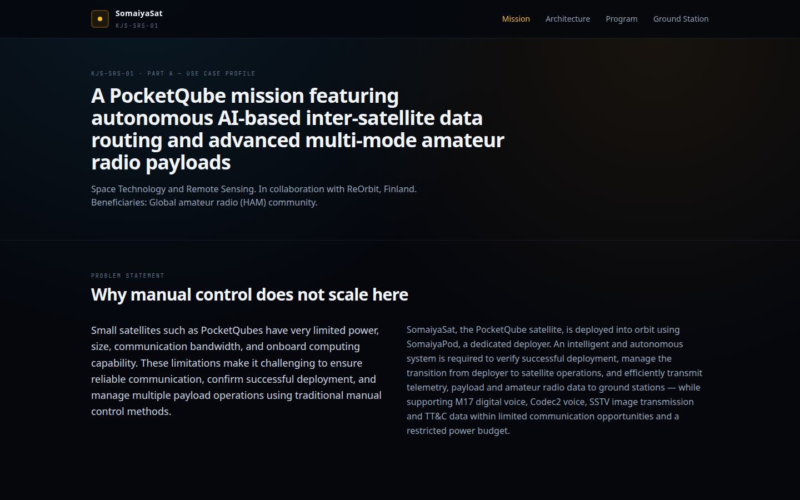
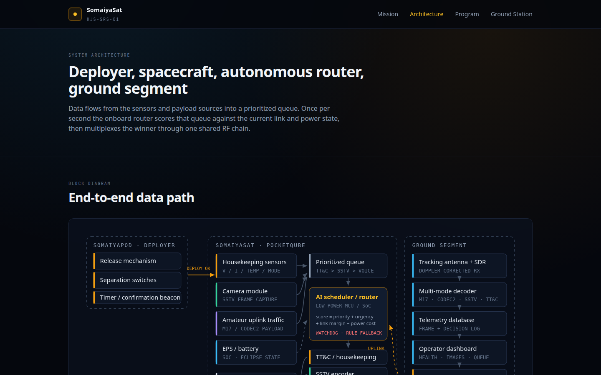
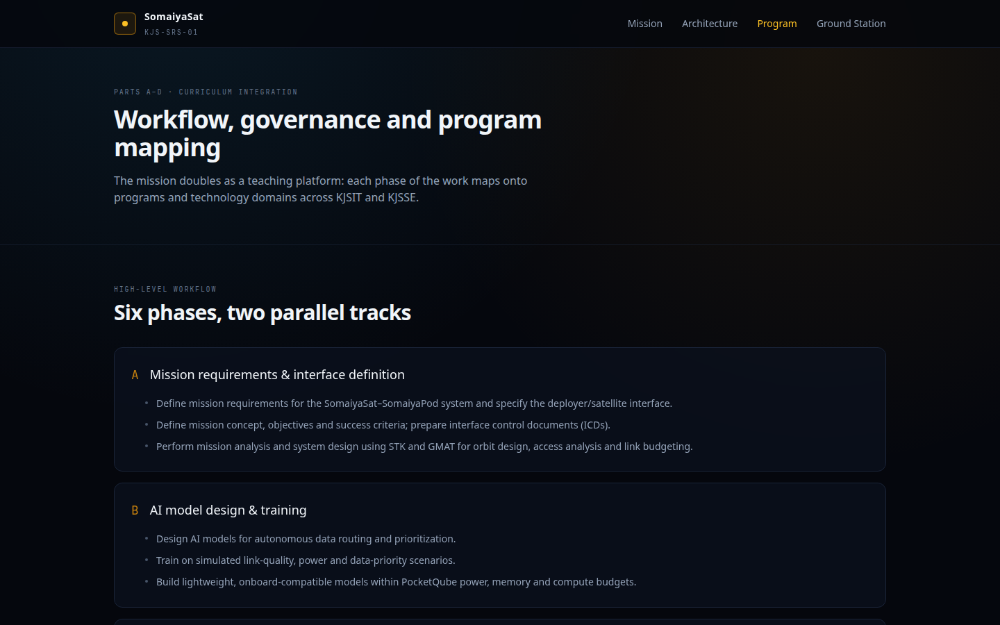
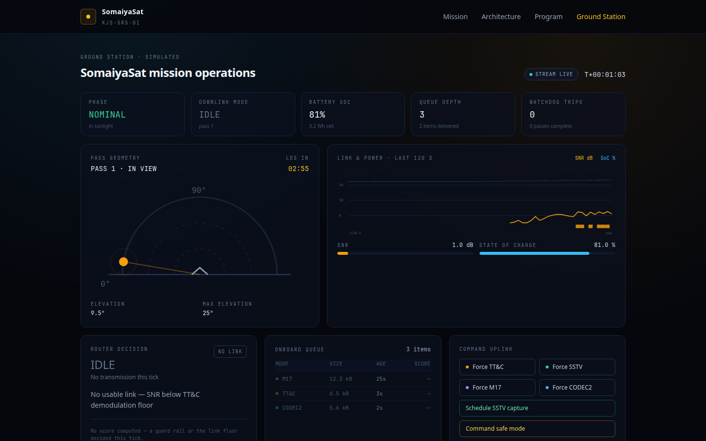

somaiyasat.vercel.app
Strategy used to read the work: inbound content marketing, planned with the RACE journey (Reach, Act, Convert, Engage).
Chaffey & Ellis-Chadwick (2019) — owned media and a planned journey outperform one-off promotion when the goal is understanding, not a single transaction.
Pulizzi (2014) and Hollebeek & Macky (2019) — content earns trust when it answers the audience’s question; engagement follows usefulness, not louder claims.
Kotler, Kartajaya & Setiawan (2017) — Marketing 4.0 treats aware-to-advocate as a connected path. Isolated pages do not make a journey.
Five pages, one persistent navigation bar. Home also deep-links so the short path and the long path both stay available.
Consideration path: problem and objectives, then how the deployer, spacecraft and ground segment connect, then the KJSIT / KJSSE program map, then the live demo.
| RACE | What the site does |
|---|---|
| Reach | Public URL, mission id KJS-SRS-01, headline, and four proof stats: 5 cm, < 1 W, 4 modes, LEO. |
| Act | Problem cards on Home and “Why manual control does not scale” on Mission. |
| Convert | Amber “Open ground station” button. Secondary text link: “Read the mission”. |
| Engage | STREAM LIVE dashboard: phase, SNR, battery, queue, and the reason for the current mode. Commands (force mode, safe mode, SSTV capture) let a visitor participate. |





The deployed site markets KJS-SRS-01 as a public, explainable mission. A visitor can meet the offer in one click or walk the longer story — problem, architecture, program, then proof. Students, faculty and the HAM community can see both the constraint (minutes of visibility, four modes, sub-1 W) and the response (autonomous routing with guard rails) without a briefing.
[1] Chaffey, D. and Ellis-Chadwick, F. (2019) Digital Marketing. 7th edn. Harlow: Pearson.
[2] Hollebeek, L.D. and Macky, K. (2019) ‘Digital content marketing’s role in fostering consumer engagement, trust, and value’, Journal of Interactive Marketing, 45, pp. 27–41.
[3] Kotler, P., Kartajaya, H. and Setiawan, I. (2017) Marketing 4.0. Hoboken: Wiley.
[4] Pulizzi, J. (2014) Epic Content Marketing. New York: McGraw-Hill.
[5] Shinde, U. and Nikam, S. KJS-SRS-01 SomaiyaSat & SomaiyaPod. KJSIT / KJSSE. https://somaiyasat.vercel.app
Acknowledgement. Prof. Poonam Narkhede and Dr. Ankita Nagmothe; use-case owners Dr. Umesh Shinde and Dr. Shailesh Nikam; Department of Information Technology, KJSSE, Somaiya Vidyavihar University.